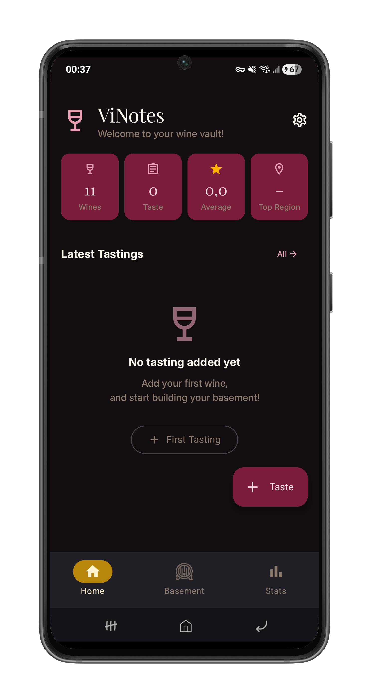
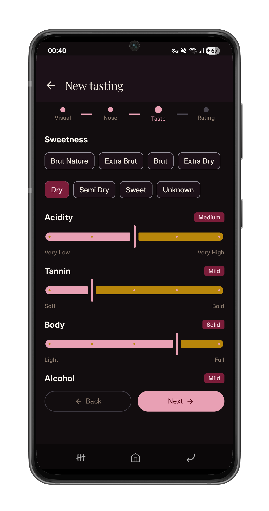
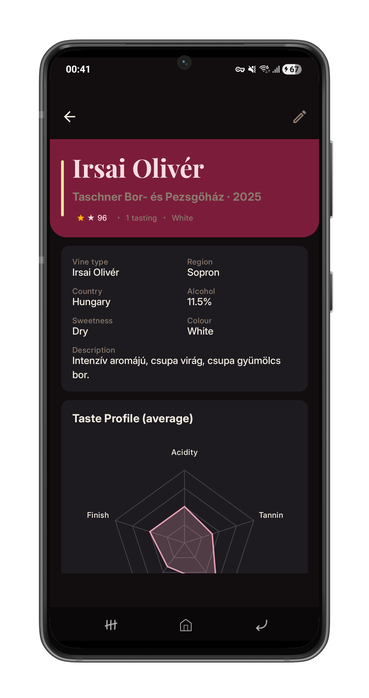
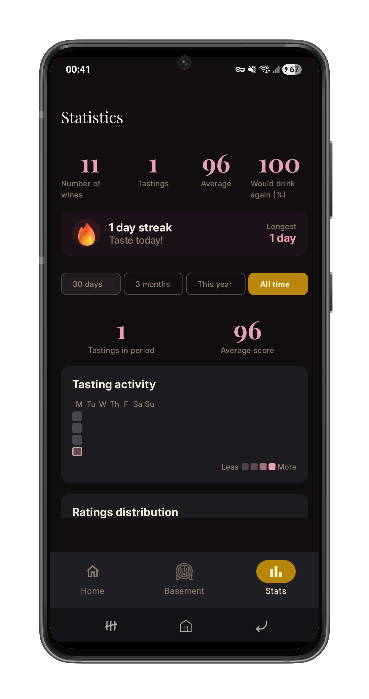

Structured tasting notes
Record appearance, nose, palate and finish with guided fields for consistent, searchable notes.
A privacy-first, offline-capable wine tasting journal for Android. Structured notes, cellar browsing, and lightweight catalogue sync.

Record appearance, nose, palate and finish with guided fields for consistent, searchable notes.
Keep a local cellar, filter and search your wines quickly, and track bottle locations.
See tasting patterns and simple visualizations of your palate over time.
No accounts, no ads - your notes stay on your device and work offline.



ViNotes is designed to keep your tasting notes private. There are no accounts, no analytics, and no ads. Everything is stored locally and the app works fully offline.
The app downloads a small JSON catalogue from the same domain. The root files are:
These files are hosted alongside this site so the Android app can fetch them from the root domain without configuration changes.
Want to contribute to the catalogue? Edit files in catalogue branch and open a pull request!
ViNotes is built with modern Android tooling: Jetpack Compose, Material3, Hilt, Room, Retrofit, and Kotlin. The website and catalogue are published from this repository.